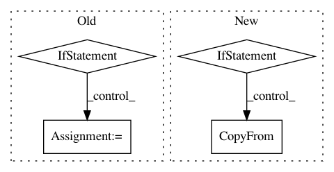

5efaf25f5499c7065f1c37bfd4288159714406d8,src/syft/lib/torch/uppercase_tensor.py,TorchTensorWrapper,_data_object2proto,#TorchTensorWrapper#,64
Before Change
proto = TensorProto()
dtype = TORCH_DTYPE_STR[tensor.dtype]
if tensor.is_quantized:
proto.is_quantized = True
proto.scale = tensor.q_scale()
proto.zero_point = tensor.q_zero_point()
data = tensor.flatten().int_repr().tolist()
else:
data = tensor.flatten().tolist()
proto.dtype = dtype
proto.shape.extend(tensor.size())
getattr(proto, "contents_" + dtype).extend(data)
After Change
def _data_object2proto(self) -> TensorProto:
proto = TensorProto()
proto.tensor.CopyFrom(protobuf_tensor_serializer(self.value))
if self.value.grad is not None:
proto.grad.CopyFrom(protobuf_tensor_serializer(self.value.grad))
return proto
@staticmethod
def _data_proto2object(proto: TensorProto) -> th.Tensor:
In pattern: SUPERPATTERN
Frequency: 3
Non-data size: 4
Instances
Project Name: OpenMined/PySyft
Commit Name: 5efaf25f5499c7065f1c37bfd4288159714406d8
Time: 2020-08-12
Author: vova@promail.spb.ru
File Name: src/syft/lib/torch/uppercase_tensor.py
Class Name: TorchTensorWrapper
Method Name: _data_object2proto
Project Name: tensorflow/transform
Commit Name: dee5b826fc271cab049319f52883d37177c65080
Time: 2018-12-17
Author: tf-transform-dev@google.com
File Name: tensorflow_transform/coders/example_proto_coder.py
Class Name: ExampleProtoCoder
Method Name: encode
Project Name: ChrisCummins/clgen
Commit Name: 3b1bf154144ca1c637471605384c5a438ee6f659
Time: 2019-08-21
Author: chrisc.101@gmail.com
File Name: deeplearning/clgen/corpuses/corpuses.py
Class Name: Corpus
Method Name: Create